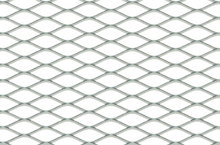
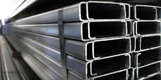

Jual Floor Deck Harga Murah di Depok ☎ ??? (www.dis.or.id)
Pernahkah anda melihat bangunan tanpa atap? Tentu pernah bukan? Bangunan tanpa atap hanyalah bangunan yang terbengkalai dan tidak diurus oleh pemiliknya. Atap adalah bagian penting sebuah bangunan yang fungsinya untuk menaungi sebuah bangunan. Karena tanpa atap maka sebuah bangunan tidak dapat disebut bangunan dan hanya dapat disebut sebagai bangunan terbengkalai. Salah satunya adalah atap galvalum, atap lengkung maupun genteng metal. Selain atap, adapula rangka atap yang berfungsi sebagai penyangga atap.
Distributor & Supplier Floor Deck (Bondex)

Anda yang punya rencana pembangunan dan membutuhkan material untuk pengecoran lantai mungkin bisa menggunakan floor deck Depok. Pemakaian dari floor deck Depok juga bisa membuat proses pengerjaan dan pembuatan dak menjadi lebih mudah, cepat dan efisien. Pasak Floordeck yang berupa rusuk-rusuk panel tertanam dengan kuat didalam beton yang membuat seluruh panel menjadi tulangan positif searah yang sangat kuat.
Kini anda bisa mendapatkan floor deck Depok berkualitas dan bermutu tinggi dengan hanya mengunjungi situs dis.or.id. Disana anda bisa mendapatkan info lebih lengkap dan detail mengenai harga dan spesifikasi dari floor deck Depok. Pastinya dengan harga yang sangat terjangkau dan dengan mutu terbaik.
Info Pemesanan Selengkapnya
Google Maps: https://www.google.com/maps/d/u/0/viewer?mid=1vSGA7eD7ctB-ierGsro9yf6LdDAQHeLS&ll=-6.2537250295094555%2C106.82745&z=15
Note: https://www.facebook.com/notes/distributor-of-industrial-supply/kontraktor-jasa-floor-hardener/1783168878649658/
Event: https://www.facebook.com/events/534395173592364/
Portfolio Produk: https://www.facebook.com/1681607345472479/photos/?tab=album&album_id=1685055588460988
Distributor & Supplier Besi Beton

Beragam jenis beton tersebut bisa diaplikasikan untuk berbagai kebutuhan pembangunan. Besi beton ulir yaitu besi beton dengan bentuk permukaan khusus bentuk sirip melintang seperti ikan ataupun dengan rusuk memanjang dan memiliki pola tertentu yang dipilih pada proses produksinya. Besi beton dapat menjadi pondasi pada bangunan yang kuat sehingga membuat bangunan yang aplikasikan besi ini dapat kokoh dan tahan lama. Maka dari itu anda harus selektif untuk menentukan besi beton mana yang sesuai dengan yang anda inginkan.
Segera kunjungi dis.or.id untuk mendapatkan besi beton yang anda inginkan. Anda bisa mendapatkan besi beton dengan harga yang sangat murah dan terjangkau.
Distributor & Supplier Steel Grating

Plat Grating terbaru memiliki kualitas terbaik yang bisa digunakan untuk sarana pembangunan pada industri hingga pertambangan. Saat ini, Plat Grating bisa di dapatkan dengan mudah. Sehingga ketika Anda akan mencari Plat Grating bisa melakukan order pada toko bangunan penyedia barang ini. pelat baja strip dan scrub baja yang digunakan sebagai bahan membuat Plat Grating tersebut dilas pada permukaan silang. Selain untuk keamanan, juga untuk aksesoris kolam renang. Terbuat dari bahan yang hot deep galvanis sehingga grating tidak mudah berkarat meskipun terkena air hujan di setiap harinya.
Anda bisa langsung mendapatkan plat grating dengan kualitas terbaik dengan harga yang cukup terjangkau dengan hanya mengunjungi dis.or.id. Disana anda bisa mendapatkan steel grating dengan berbagai ukuran tertentu dengan harga yang sangat terjangkau namun berkualitas dan bermutu tinggi.
Distributor & Supplier Pipa (Hitam/Gas, Galvanis)
.jpg)
Kekuatan dari pipa hitam gas ini memang sangat kuat, tak heran bila untuk kebutuhan konstruksi bangunan yang berat material ini tidak pernah absen. Karena kekuatan yang dimiliki olehnya, tak heran bila pipa hitam banyak digunakan pada kebutuhan konstruksi. Ukuran pipa besi hitam terkecil adalah ½ inci, dan paling besar 40 inci. Anda dapat mengkonsultasikan keperluan pipa hitam tersebut pada kami dan mengetahui informasi harganya lebih detail.
Distributor & Supplier Kawat Bronjong/Gabion

Kawat bronjong berfungsi sebagai pencegah erosi. Kawat ini juga ada yang berbahan galvanis. Ini berbentuk seperti anyaman yang terbuat dari kawat biasa. Hanya saja, Anda harus tahu kawat ini terbuat dari baja. Namun, ada juga kawat bronjong PVC yang dilapisi dengan plastik. Kawat bronjong ini juga biasanya dipasang pada pilar jembatan agar tidak tergerus karena adanya arus air. Tujuannya agar tidak mudah tergerus ketika adanya arus air.
Jika anda sedang mencari kawat bronjong, anda bisa datang dan mengunjungi situs dis.or.id.
Distributor & Supplier WF H-beam

Besi WF kini menjadi jenis baja struktural yang banyak dikenal masyarakat saat ini. Jenis besi ini banyak dimanfaatkan sebagai bahan konstruksi baja. untuk harganya, besi WF tergolong cukup terjangkau dan tidak terlampau mahal. sementara untuk pemesanan juga mudah, Anda cukup menghubungi pihak produsen sudah bisa mendapatkannya.
Untuk itu bagi anda yang sedang mencari besi baja dengan kualitas terbaik. Disana terdapat berbagai ukuran dari besi WF yang bisa anda pilih sesuai dengan kebutuhan anda. Disana anda bisa mendapatkan besi wf yang anda inginkan.
Distributor & Supplier Expanded Metal

Umumnya penggunaan dari Expended Metal ini adalah untuk walkway atau catwalk, anak tangga pada tower serta banyak juga digunakan di dermaga/konstruksi lepas pantai/pertambangan. Sedangkan untuk keunggulannya sendiri adalah memiliki bentuk yang indah dan juga homogen, lebih vareatif dalam hal pengaplikasiannya, relatif lebih ringan, dan lebih mudah dipasang. Umumnya dipergunakan sebagai partisi pengaman gudang, railing, pelindung mesin, pagar penjara, plafond, dan lain sebagainya.
Disana anda bisa menemukan dan memesan langsung expanded metal yang anda butuhkan.
Distributor & Supplier Plat (Hitam, Kapal, Bordes, Strip)

Material Plate kapal padadasarnya dilihat dari segi penampakan Fisiknya sama dengan plat hitam mempunyai warna yang hitam akan tetapi,ada perbedaan dari ukuran dimensi dan kandungan kimianya dikarenakan fungsinya dan aplikasinya yang berbeda. Pada umumnya disebut plate kapal dikarenakan biasa digunakan untuk bahan pembuatan badan kapal dan mempunyai standart spesifikasi material yang beragam untuk spesifikasi.
Anda bisa mendapatkan plat hitam, plat kapal, plat bordes dan plat strip dengan mengunjungi situs dis.or.id. Disana terdapat berbagai macam plat yang anda butuhkan dan pastinya dengan harga yang sangat terjangkau.
Distributor & Supplier Atap Galvalum

Seng galvalum adalah bahan seng dengan berbagai kelebihan yang memiliki komposisi tertentu. Apalagi bila ruangan tersebut tidak dilengkapi pendingin ruangan.
Ada yang menjual per m2 tapi ada pula yang menjual dengan sistem lembaran. Patut anda ketahui, jenis baja yang saya maksud kali ini bukan baja berat seperti halnya alat berat, melainkan baja ringan, sehingga tidak akan membebani dinding rumah anda. Anda pastinya sudah banyak melihat rumah menggunakan atap jenis ini.
Galvalum sendiri mempunyai banyak kelebihan diantaranya adalah anti panas. Anggapan ini sangat keliru, karena galvalum bukanlah atap seng pada umumnya. Disini kami menyediakan galvalum yang tentunya sesuai kebutuhan dan dengan harga yang sangat kompromi khusus untuk anda yang membutuhkannya.
Distributor & Supplier Atap Lengkung

Bagian yang berfungsi sebagai pelindung bagi pengguna dan isi bangunan dari panas, hujan dan berbagai macam cuaca adalah atap. Fungsi atap ialah untuk menutupi seluruh bagian atas dari sebuah bangunan. Masing-masing atap mempunyai keunggulan dan kelemahan sendiri.
Bila atap sudah bocor maka kualitas dari atap tersebut akan diragukan. Sehingga membuatnya tahan cuaca, bahkan ekstrim sekalipun. Salah satunya juga harus kuat menahan derasnya air hujan.
Namun, saat ini pembahasan saya adalah atap dengan bahan galvalum dengan bentuknya yang unik. Terkadang, atap bangunan mereka merupakan atap dengan jenis atap lengkung. Yaitu, lengkungannya yang sangat tidak biasa jika dibandingkan dengan atap galvalum yang lain.
Distributor & Supplier Truss Canal C

Besi kanal C dapat kita temukan hampir dimana saja. Besi kanal C sebutan untuk besi yang satu ini. Kedua istilah tersebut merujuk pada sebuah benda yang sama. Sehingga gabungan keduanya menghasilkan kualitas yang bila ditandingkan dengan bahan gabungan lain maka tidak akan kalah berkualitasnya. Jadi fungsi nya sebagai reng atau penyangga genteng. Jadi dengan kata lain, besi kanal C ini bisa dikatakan multi fungsi. Mencari kanal c galvalum berkualitas dengan harga murah? Maka dis.or.id adalah jawaban tepat untuk anda. Disana anda akan banya kmendapat info menarik seputar truss besi kanal c dan masih banyak lagi. Bila anda mencari kanal c atau truss maka anda sudah datang ke tempat yang tepat.
Distributor & Supplier Hollow Galvalum

Hollow Galvalum adalah bahan material bangunan yang terbuat dari logam dan bersifat anti karat. Sebenarnya ada banyak unsur yang dilibatkan dalam pembuatan hollow galvalum ini, yaitu alumunium, baja, beserta zinc. Bahkan kini besi ini sudah mulai menggeser penggunaan kayu pada rangka plafon.
Bahan jenis ini memiliki banyak sekali kelebihan, selain tahan terhadap karat, hollow galvalum juga tahan terhadap serangan rayap dan juga memiliki beban yang cukup ringan. Ukuran hollow galvalum plafon yang paling bagus untuk digunakan yaitu ukuran 2X4 dengan tebal 0,25. Sehingga tidak heran bila hollow galvalum menjadi produk paling dicari oleh masyarakat dalam industri pembangunan. Studi penelitian telah mengungkapkan bahwa kerangkan plafon menggunakan jenis hollow ini bisa bertahan puluhan tahun. Disana sudah banyak info mengenai hollow galvalum, dari mulai ukuran, harga, berat dsb.
Distributor & Supplier Seng Gelombang

Seng gelombang dijual dengan harga yang relatif murah dibanding genteng, hal inilah yang menjadi daya tarik besar penggunaannya. Baik itu bangunan besar dan kecil, tanpa atap yang berkualitas maka bangunan tersebut rentan kebocoran. Andapun wajib memperhatikan bagaimana atap bagian bangunan tersebut apakah berkualitas ataukah tidak, atap dengan kualitas rendah akan beresiko kerusakan maupun kebocoran yang pasti merugikan seisi bangunan ruangan tersebut. Atap menjadi bagian penting sebuah bangunan yang harus diperhatikan. Tak heran jika seng gelombang melengkapi fiturnya dengan menyediakan beragam ukuran seng gelombang menurut standar SNI. Terkadang tak hanya jenis seng gelombang dengan ukuran besarlah yang dicari kebanyakan orang.
Dengan seng gelombang kecil, anda tak perlu lagi repot memotong ukuran asli seng gelombang dan menata seng gelombang dengan ukuran yang pas pada atap bangunan. Distributor penjual seng gelombang sekarang ini sudah menyebar ke seluruh Indonesia, baik di kota-kota besar maupun kecil. Seng gelombang dengan warna ataupun transparan amatlah awet bila dibandingkan dengan bahan pembuat atap lainnya.
Distributor & Supplier Plat Seng
![seng gelombang standar</a>” width=”500px”/></p><p>Plat seng dan plat galvalum banyak digunakan untuk berbagai kebutuhan, dari kebutuhan pembangunan rumah, industri, pabrik dan berbagai kegunaan lainnya. Anda dapat memilih lebaran atau per meter sesuai dengan fungsinya.<br /> Plat galvanis ukuran 3mm memang dikategorikan ke ukuran paling tebal, sedangkan 1mm dapat dikatakan adalah titik tengah dari ketebalan plat. Namun apabila anda membutuhkan nya hanya sedikit, misal untuk penyambungan, atau ingin mengganti beberapa bagian talang rumah anda, anda dapat membeli yang per meter saja. Namun apabila anda berencana membangun sebuah atap dari awal, sebaik nya anda membeli plat galvanis lembaran, karena kebutuhan anda banyak dan juga luas, sehingga yang lembaran ini akan lebih efektif untuk anda.</p><p>Apakah anda sedang mencari plat seng & plat galvalum? Anda berada di tempat yang tepat, silakan kunjungi situs dis.or.id untuk info lebih lanjut. Lalu berapa harga plat galvanis 2018? Bila anda sedang mencari harga terbaru hari ini juga, anda dapat menghubungi kami karena kami menjual plat galvanis, galvalum dengan berbagai ketebalan dan ukuran.</p><h3>Distributor & Supplier Genteng Metal</h3><p><img src=](../1.bp.blogspot.com/-0CchCC25YVc/WNh0RMY30BI/AAAAAAAAAUo/hSxLHqYIHsQdjcqueXc5krGg4kTYn7X_ACLcB/s320/Ukuran-dan-Ketebalan-Plat-Seng-Lokfom-BJLS.jpg) genteng konvensional yang terbuat dari tanah liat. Anda cukup menghubungi contact person yang sudah tertera di setiap industri yang anda butuhkan.
genteng konvensional yang terbuat dari tanah liat. Anda cukup menghubungi contact person yang sudah tertera di setiap industri yang anda butuhkan.
Bila belum percaya, maka anda dapat mengujungi situs official kami di dis.or.id untuk mendapatkan info yang lebih lanjut dan dapatkan penawaran terbaik dari kami khusus untuk anda.
Distributor & Supplier Besi Wiremesh

Wiremesh merupakan besi yang diproduksi dengan bantuan mesin las otomatis dimana ia menggabungkan besi lonjor hingga membentuk anyaman. Nama lain dari besi wiremesh ini adalah besi anyam. Struktur anyam dari besi wiremesh sendiri juga bermacam-macam, anda bisa sesuaikan dengan kebutuhan apakah struktur anyam kotak atau yang jajar genjang. Besi wiremesh bisa anda manfaatkan untuk berbagai kebutuhan, misalnya saja untuk kebutuhan konstruksi penguat dak beton, plat lantai, dan juga anak tangga. Setiap jenis bentuk wiremesh dimanfaatkan untuk kebutuhan yang berbeda-beda, tergantung dari anda memilih jenis anyam kotak atau jajar genjang. Besi wiremesh dengan ketebalan 8 sampai 10 digunakan untuk bangunan bertingkat. Karena di produksi dengan teknologi masa kini yaitu sistem las otomatis, menjadikan pengerjaan susunan kawat lebih rapi dan lebih kokoh.
Distributor & Supplier Pagar BRC

Pagar BRC dibuat dari besi beton berukuran diameter 5 mm – 8 mm sehingga tergolong kuat sebagai pagar pengaman. besi-besi berdiameter diatas digabungkan dengan bantuan mesin las wiremesh sehingga tersusun menjadi satu bagian rapi. Ia termasuk kategori pagar minimalis yang siap pasang untuk melindungi bangunan rumah, gedung, dan kantor. Untuk melindungi sebuah bangunan, kekuatan pagar BRC sangat dapat diandalkan karena ia diproduksi dengan baja bertegangan tinggi dengan tegangan ijin 2900 kg/cm2, kekuatannya bahkan 2,5 kali lipat dibanding jenis besi biasa. Pagar BRC juga tahan karat karena lapisan besi telah terlindungi dengan galvanis. Pagar BRC memiliki daya tahan sampai > 10 tahun karena ia tergolong besi yang tahan karat karena sudah terlapisi dengan lapisan galvanis.
Distributor & Supplier Kawat Loket, Kawat Harmonika

Kawat loket harmonika sering sekali diaplikasikan pada kebutuhan kawat pagar dan penutup jendela, hal ini tentu tidak tidak lain karena struktur bentuk dari kawat loket harmonika sendiri mirip seperti anyaman yang kuat. Kawat loket harmonika ini telah dimanfaatkan untuk berbagai keperluan, baik industri, konstruksi, rumahan, dan sebagainya. Untuk kehidupan sehari-hari kawat harmonika banyak digunakan untuk keperluan rumahan, konstruksi, dan industri. Anda dapat memesan kawat loket harmonika yang terlapis dengan galvanis untuk kualitas terbaik yang tahan korosi.
Distributor & Supplier CNP & UNP

Besi UNP atau yang biasa disebut dengan besi kanal merupakan besi yang memiliki bentuk lengkung seperti huruf U dan biasanya diaplikasikan sebagai sambungan atau dudukan atap. Besi UNP juga cocok diaplikasikan untuk kebutuhan girts / penutup dinding. Besi CNP memiliki bentuk yang hampir mirip dengan huruf C sehingga ia sering disebut sebagai profil C / balok purlin. Besi UNP dan CNP sangat fleksibel mengingat ia dapat dimodifikasi dari plat koil menggunakan teknik cutting. Tak hanya bermanfaat untuk kepentingan konstruksi bangunan saja, material besi ini sangat berguna dalam dunia otomotif.
Distributor & Supplier Besi Siku

Dalam dunia konstruksi, salah satu material yang cukup penting dan tidak boleh dilupakan adalah besi siku. Besi siku dibuat dengan bentuk standar yang telah disesuaikan berdasarkan kebutuhan penggunanya, tak heran bila ia masuk kategori besi penyangga yang dapat diandalkan. Bentuk dari besi siku sendiri adalah membentuk dua sisi tegak yang lurus, untuk sudut berhadapannya sendiri tergantung dengan spesifikasi kebutuhan anda. Ukuran panjang dari besi siku yang kami sediakan adalah panjang 6 meter, dan ketebalan yang bisa anda sesuaikan dengan kebutuhan. Besi siku dapat anda manfaatkan untuk beragam kebutuhan konstruksi, bangunan, furnitur, dan lainnya. Butuh informasi lebih lengkap lagi? Kunjungi saja situs resmi kami di www.dis.or.id Informasi lebih detail akan anda dapatkan dengan menghubungi kontak yang tertera pada website dis.or.id.
Distributor & Supplier Hollow (Hitam, Galvanil, Galvanis)

Besi hollow banyak sekali dimanfaatkan untuk kebutuhan proyek bangunan karena kualitasnya yang lebih kuat dibanding kayu. Apalagi jika mengingat menggunakan besi hollow akan membuat pengerjaan konstruksi selesai lebih cepat. Tentu saja hal ini karena kelebihan yang ditawarkan oleh besi hollow sendiri tidak dimiliki kayu, material yang kokoh, pengerjaan cepat, dan tidak mudah rapuh. Tentu saja hal ini dikarenakan kekuatan yang dimiliki hollow galvanis tidak bisa dibandingkan dengan kayu, material ini juga lebih mempercepat pembangunan konstruksi. Besi hollow memiliki kekuatan yang lebih kokoh dan dapat mempercepat pekerjaan konstruksi karena strukturnya yang mudah diatur. Anda dapat menghubungi kontak kami untuk melakukan perhitungan kebutuhan hollow hitam tersebut. Hubungi kami untuk lakukan konsultasi kebutuhan besi hollow dan panjang yang dibutuhkan. Bagi anda yang membutuhkan besi ini, kami dapat membantu anda untuk menentukan ukuran besi yang diperlukan dengan menghubungi kontak kami!
Distributor & Supplier Pipa Pancang

Pipa pancang yang memiliki fungsi cukup penting dalam sebauh proyek tentu saja tersedia di sini. apalagi mengingat banyak yang mencarinya karena memang memiliki fungsi yang sangatlah bermanfaat. Jika mengenal fungsinya yang memang sangat bermanfaat, apalagi bagi pembangunan di atas permukaan laut, pasti membuatnya lebih di kenal lagi. Pipa pancang ini sendiri memiliki beragam ukuran sehingga akan memudahkan bagi Anda untuk menyesuaikan nya dengan kebutuhan. Hal ini bertujuan untuk memudahkan penyesuaian. Selanjutnya, bagi Anda yang ingin mendapatkannya, jangan khawatir karena saat ini banyak sekali distributor penawar pipa pancang. Di sini Anda akan mendapatkan pipa pancang berkualitas yang siap di gunakan. Terlebih jika mengingat berbagai kelebihan dan fungsi nya yang bisa di terapkan di mana-mana.
Jasa Pondasi Bor (Strouss/Borepile)

Kini untuk memasang pondasi rumah yang sesuai dengan hasil memuaskan, jangan khawatir karena Anda tidak perlu mengkhawatirkan nya lagi. oleh karena itu, jika Anda ingin menggunakan jasa pengeboran, tidak dapat di pungkiri lagi bahwa hal itu akan sangat membantu sebagai solusi. Terkait jasanya tidak perlu jauh-jauh karena di sini Anda bisa menemukan pemesanan yang mudah. untuk kualitasnya pun tidak perlu di pertanyakan lagi karena dengan jasa profesional yang lebih berpengalaman ini, pengeboran akan semakin terjamin. Akan tetapi, perlu di ketahui pula kalau selama proses pengeboran tersebut akan ada suara bising yang cukup mengganggu sekalipun tidak menimbulkan getar. Yakni pengeboran manual atau yang otomatis dengan menggunakan mesin. Untuk masalah kualitas hasilnya pun sama saja jadi tidak perlu khawatir. Mesin seperti ini pun telah banyak di temukan di pasaran.
Distributor & Supplier Genset (New/Second)

Untuk genset atau singkatan dari generator set ini, pasti juga sudah banyak di kenali. Produk yang satu ini merupakan penghasil ternaga listrik yang dalam penggunaannya memanfaatkan bahan bakar berupa solar. Dalam penjualan nya, genset ini biasanya ada dua pilihan yaki dalam kondisi baru maupun second atau bekas. Dan kedua jenis tersebut bisa di dapatkan di DIS.
genset sendiri tersedia dalam berbagai pilihan merk sesuai perusahaan yang mengeluarkan nya dan bisa Anda jadikan pilihan mana yang sekiranya paling sesuai.
Distributor & Supplier UPS

UPS saat ini sebenarnya telah banyak di gunakan. Sedangkan untuk pengertiannya, UPS merupakan salah satu alat elektro yang berfungsi untuk menyimpan tenaga listri sehingga listrik tetap bisa menyela sementara ketika sumber utama terptus. Dalam hal ini tentu cukup penting memilikinya. terlebih bagi pengguna komputer. Bukan hanya kualitas spesifikasi yang berbeda, akan tetapi juga kapasitas listrik yang bisa di simpan. Mulai dari kualitas maupun kapasitas yang di miliki. Sedangkan untuk pembeliannya, Anda bisa mendapatkan barang di DIS. Sedangkan untuk memiliki UPS berkualitas, Anda bisa merujuk pada DIS.
Distributor & Supplier Forklift (Second)

Kini forklif memang cukup banyak di gunakan baik dalam industri kecil, menengah maupun besar. baik itu untuk industri yang kecil maupun besar. mengimbangi akan hal itu, tidak heran jika kini penjualan forklif ada di mana-mana. Sedangkan di sini, Anda bisa menemukan penjualan tersebut dengan kualitas barang yang memuaskan sekalipun merupakan barang second. Bahkan meskipun bekas, bisa terlihat seperti baru. Jika sudah mengetahui kualitasnya yang terjamin tersebut, tentu saja segala aktifitas industri akan menjadi semakin mudah lagi. Selanjutnya, jika forklif sudah tidak di gunakan, Anda pun bisa kembali menjualnya pada setiap distributor forklif sehingga tidak akan rugi membelinya.
Jasa Pembuatan Moulding Inject

Bagi Anda yang sedang bingung untuk membuat moulding inject, jangan khawatir karena ada solusi yang bisa Anda temukan di sini. Dalam hal ini kalau masalah kuantitas, maka tidak perlu bingung karena berapa pun kebutuhan Anda, di sini akan selalu siap melayani. sedangkan untuk masalah kuantitas moulding inject nya, jangan khawatir karena tanpa batasan cetak, berapa pun keinginan Anda, pasti akan di layani. sedangkan bagi Anda yang sedang bingung untuk mencari ide bentuknya, jangan khawatir karena ada beberapa ide yang bisa Anda gunakan. Selanjutnya, silahkan Anda sesuaikan pilihannya dengan kebutuhan yang sedang Anda cari. Dengan demikian pencetakan plastik ini bisa tepat sasaran.
Jasa Pembuatan Sparepart Mesin Produksi / Alat Berat

Di dunia mesin, tentu saja mendengan kata sparepart atau alat berat sudah tidak asing lagi. Sedangkan mengingat fungsinya pun, sparepart ini cukup penting juga menjadi perhatian tersendiri. jadi untuk itu silahkan Anda memilih jasa terpercaya yang akan membuatnya dengan maksimal sebagaimana di Industri DIS. Apalagi mengingat dukungan tenaga profesional yang di sediakan sehingga sparepart Anda akan lebih aman. Terkait dengan hal itu, perlu Anda ketahui bahwa pembuatan sparepart yang salah, bisa jadi akan membahayakan si pengguna. Oleh karena itulah di butuhkan hasil berkualitas sehingga bisa bekerja secara maksimal. Sedangkan harga penawaran, untuk setiap alat berat bisa berbeda tergantung jenis dan ukurannya. Perbedaan harga tersebut bisa berdasarkan pada jenisnya yang berbeda maupun ukurannya.
Jasa Service Elektronik (Kompor Gas, Dispenser, Mesin Cuci)

Dengan semakin berkembanganya zaman, penggunaan elektro juga semakin banyak. Oleh karena itu, sebagai penyeimbang, tidak heran pula jika jasa service elektronik yang melayani perbaikan seperti kompor gas, dispenser dan mesin cuci terus bermunculan. sedangkan beberapa jasa ini melayani service seperti kompor gas, dispenser maupun mesin cuci. Sedangkan untuk masalah kualitas yang di tawarkan DIS, jangan khawatir karena tingkat keamanan dan perbaikannya sangat tinggi dna terjamin. Nah, kalau masalah servicenya sendiri sebenarnya Anda bisa juga melakukannya pada barang-barang yang harus di cek saja sekalipun tidak ada keluhan secara spesifik. Akan tetapi pada umumnya, orang-orang yang melakukan service elektronik adalah pada barang yang bermasalah. Selain untuk perbaikan, Anda pun bisa juga hanya melakukan pengecekan tanpa keluhan sebagaimana service pada umumnya.
Komponen penting bagi bangunan salah satunya adalah atap, memang atap sudah tidak diragukan lagi manfaatnya pada sebuah bangunan. Tapi salah satu solusi selain hal tersebut adalah menggunakan atap dengan berbagai jenis sesuai dengan yang saya bahas diatas. Karena rumah paling kecil sekalipun pasti mempunyai atap di atasnya. Dengan senang hati, kami akan memberikan solusi untuk setiap kebutuhan dan keperluan anda. Dapatkan pula info menarik tentang bahan-bahan bangunan yang anda cari. Maka, dengan senang hati kami akan membantu anda.